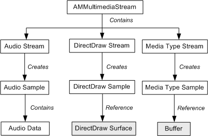
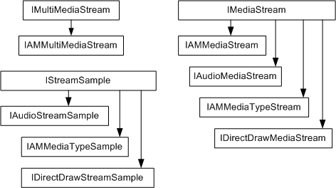

[The feature associated with this page, DirectShow, is a legacy feature. It has been superseded by MediaPlayer, IMFMediaEngine, and Audio/Video Capture in Media Foundation. Those features have been optimized for Windows 10 and Windows 11. Microsoft strongly recommends that new code use MediaPlayer, IMFMediaEngine and Audio/Video Capture in Media Foundation instead of DirectShow, when possible. Microsoft suggests that existing code that uses the legacy APIs be rewritten to use the new APIs if possible.]
[!Note]
These APIs are deprecated. Applications should use the Sample Grabber filter or implement a custom filter to get data from a DirectShow filter graph.
Â
The following diagram shows the object hierarchy used in multimedia streaming.

The multimedia streaming architecture defines three general type of object:
The following media stream objects are supported:
Each media stream object creates its own kind of stream sample object:
The following diagram shows the interface hierarchy for the interfaces listed previously:

Â
Â